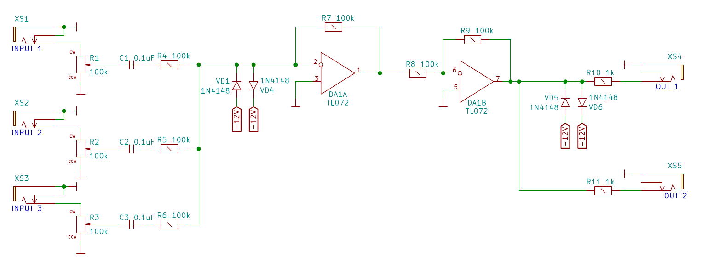

Analogrechner
Heute möchte ich über Analogrechner sprechen. In der heutigen Zeit führen analoge Computer ein Schattendasein, verglichen mit ihren digitalen Gegenstücken. Aber sie sind wunderbare kleine Maschinen. Und diese Maschinen meine ich wortlich, denn es gibt analoge mechanische Computer, die Modelle aus der Welt sind und verwendet werden zur Berechnung und Vorhersage von Gezeiten in bestimmten Gebieten der Welt. Auch das Gehirn ist ein riesiger analoger Computer mit einem vergleichsweise sehr kleinen Energiebudget. Es braucht nur 12 Watt. 12 Watt, das ist nicht einmal ein Viertel des Stromverbrauchs eines Laptops von 65 Watt. Und man kann mit dem Gehirn sehr viel anstellen, aber zurück zum Thema. Ich möchte hauptsächlich über analoge elektronische Computer sprechen, die während des Zweiten Weltkriegs zur Berechnung von ballistischen Kurven verwendet wurden. Analogrechner können also summieren, multiplizieren, dividieren, integrieren und differenzieren wie ihre digitalen Gegenstücke.
Aufsummieren
Um verschiedene Signale zu summieren, können wir einen Operationsverstärker in einer invertierten Schaltung verwenden, der die Signale an seinen Eingängen einfach aufsummiert. Da er invertiert ist, brauchen wir einen zweiten Operationsverstärker, der hinterher addiert, um das richtige Signal zu erhalten. um am Ende das richtige Signal zu erhalten. Die gleiche Schaltung wird als Mischschaltung für Audiosignale verwendet, von der ich auch das das Foto.

Multiplizieren
Um einen analogen Multiplizierer zu erstellen, wenden wir hier einen Trick an, indem wir die Eingangssignale in den logarithmischen Raum transformieren das Ergebnis aufsummieren und wieder in den linearen Raum zurücktransformieren. Mathematisch gesehen tun wir Folgendes
\[c= a*b = alog( \log(a) + \log(b))\]
Unten sehen Sie den entsprechenden Schaltplan: Die erste Stufe an den Eingängen sind beide logarithmische Verstärker, man sieht die Rückkopplungsdiode zwischen Ausgang und nicht-invertierendem Eingang. Dann sehen wir eine einfache Addierschaltung (ein invertierender Verstärker, mit einem Summenknoten davor). Und schließlich haben wir einen antilogarithmischen Verstärker, der die Signale in den linearen Raum zurückführt. Beachten Sie, dass der Ausgang tatsächlich invertiert ist und wir einen zusätzlichen invertierenden Verstärker benötigen, um das resultierende Signal zu korrigieren.
Bild:../analog_multiplier.png[analoger Vervielfacher]
Fortsetzung folgt…